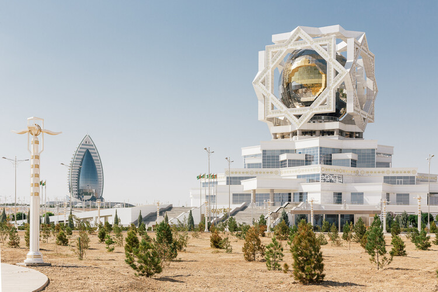
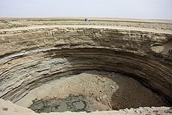
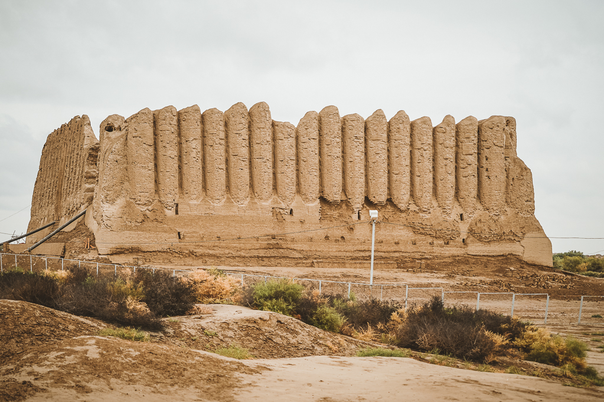
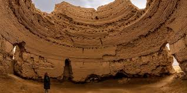
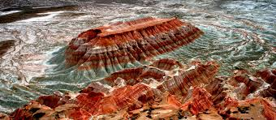
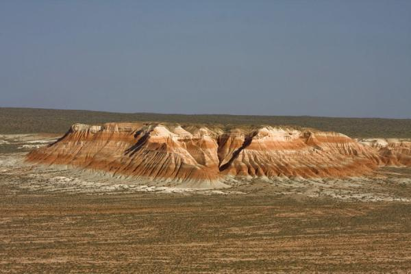
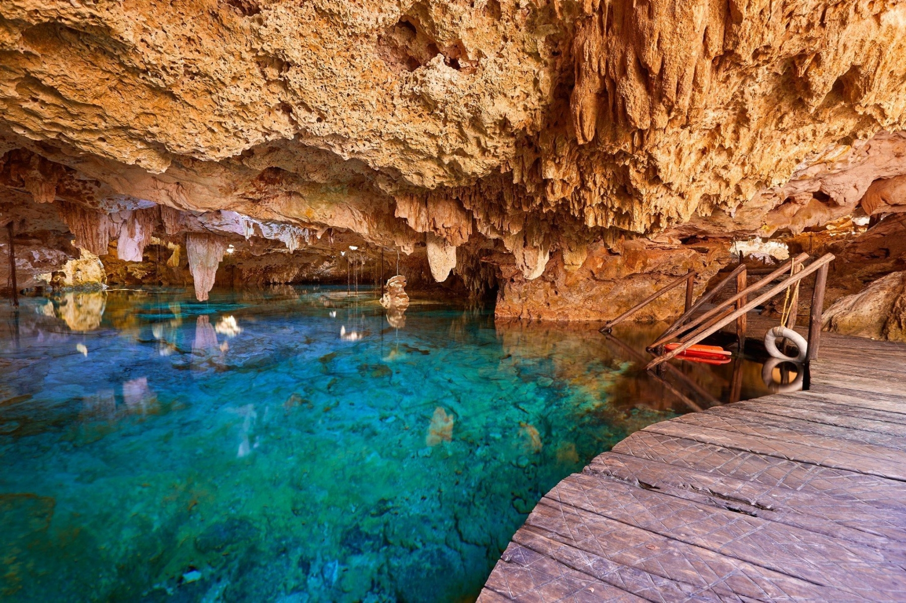
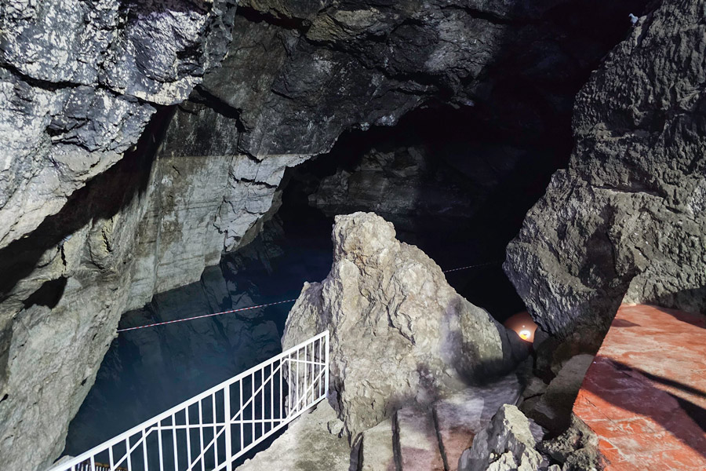

Ashgabat — The White Marble City


Ashgabat might be the most unexpected capital city on the planet. Almost entirely rebuilt in gleaming white marble since the 1990s, it holds a Guinness World Record for the highest density of white marble buildings. The wide boulevards, golden monuments, and giant fountains give it a truly surreal, dreamlike feel.
Beyond the spectacle, Ashgabat has great museums, the world's largest hand-woven carpet on display, and the lively Tolkuchka market right on its doorstep. It also makes a great base for exploring the ancient Parthian ruins at Nisa, just 18 km away.
Darvaza Gas Crater — The Door to Hell


The Darvaza Gas Crater has been on fire since 1971, when Soviet geologists accidentally drilled into a gas pocket and set it alight. Over 50 years later, it's still burning. This 69-meter wide pit of roaring flames in the middle of the Karakum Desert is one of the most extraordinary sights you'll ever see.
Visit at night for the full effect. Standing at the edge of the crater under a sky full of desert stars is genuinely unforgettable. Many travelers camp right next to it and combine the trip with camel rides and stargazing.
Merv — Jewel of the Silk Road
Ancient Merv is a UNESCO World Heritage Site and one of Central Asia's greatest historical treasures. At its peak in the 12th century, it was one of the largest cities in the world. Today, the site spans over 1,000 hectares and covers 4,000 years of human history.
Walk through towering mud-brick ramparts, see the magnificent Sultan Sanjar Mausoleum, and imagine the Silk Road caravans that once filled these streets. History lovers will be completely in their element here.


Yangykala Canyon — The Grand Canyon of Turkmenistan


Yangykala Canyon is Turkmenistan's best-kept secret. Its towering pink, red, and cream cliffs stretch for over 50 km and are genuinely jaw-dropping. The colors shift throughout the day, making it a dream location for photographers at sunrise and sunset.
Getting here takes a 4WD vehicle and a bit of planning, but that's part of the adventure. Odds are you'll have this breathtaking landscape completely to yourself, which is a pretty rare thing in today's world.
Kow Ata Underground Lake — The Father of Caves
Kow Ata, meaning "Father of Caves," is a huge underground cave with its own natural thermal lake, sitting at a comfortable 33-37°C all year round. Yes, you can actually swim in it. Located just 60 km from Ashgabat, it's one of the most unique things to do in Central Asia.
Descend 65 steps into the warm, glowing cave and take a dip surrounded by stalactites hanging from the vaulted ceiling. It's peaceful, a little otherworldly, and completely wonderful. Locals have been visiting for the therapeutic waters for centuries.

